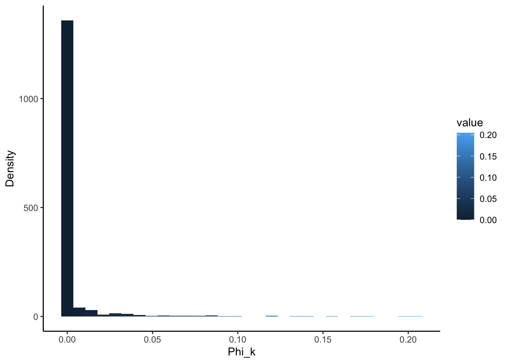
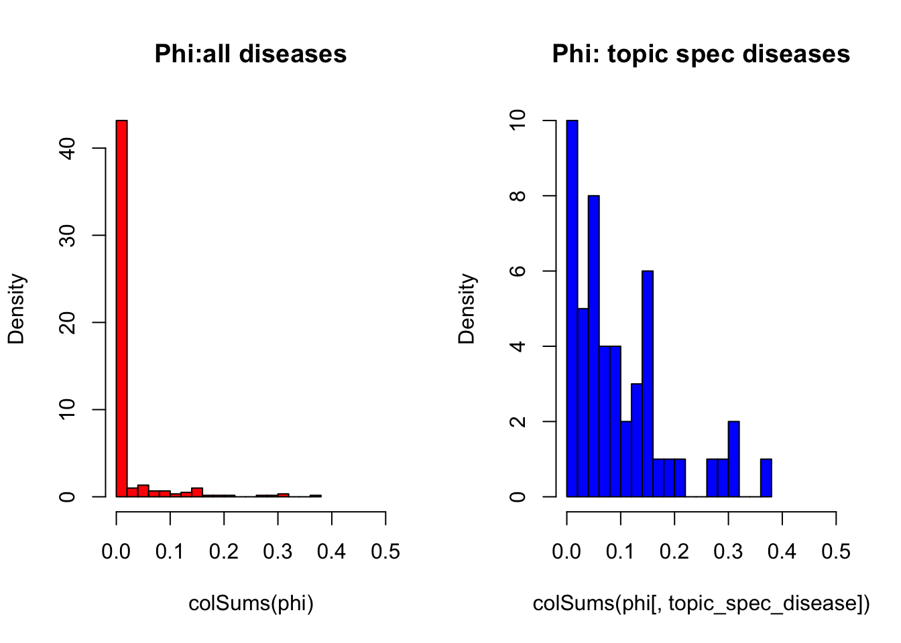
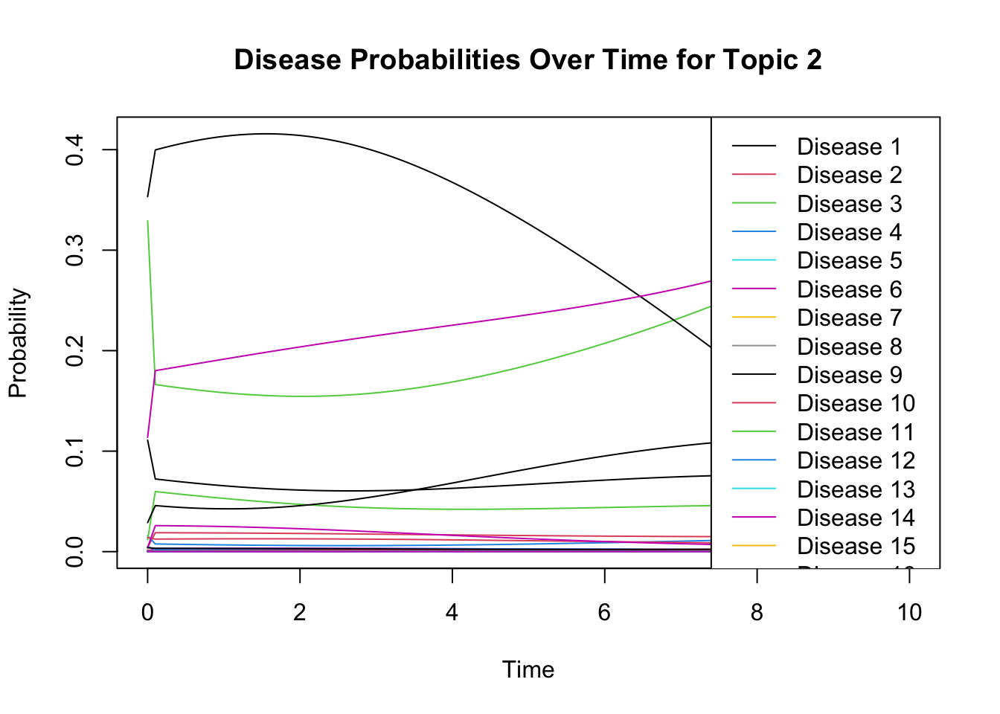
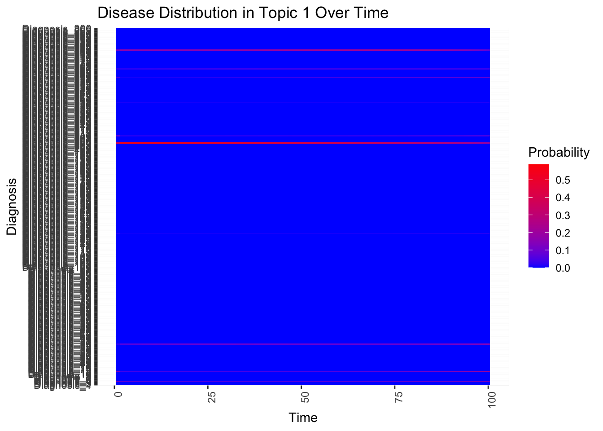
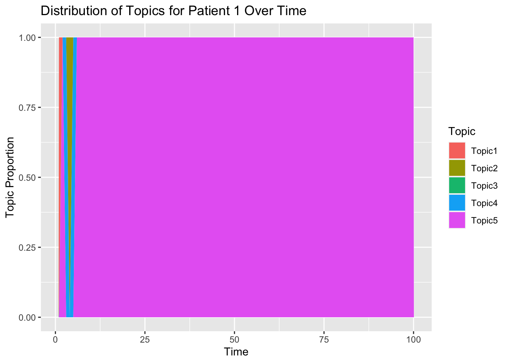

Last updated: 2023-12-29
Checks: 6 1
Knit directory: ~/multistate2/
This reproducible R Markdown analysis was created with workflowr (version 1.7.1). The Checks tab describes the reproducibility checks that were applied when the results were created. The Past versions tab lists the development history.
The R Markdown file has unstaged changes. To know which version of
the R Markdown file created these results, you’ll want to first commit
it to the Git repo. If you’re still working on the analysis, you can
ignore this warning. When you’re finished, you can run
wflow_publish to commit the R Markdown file and build the
HTML.
Great job! The global environment was empty. Objects defined in the global environment can affect the analysis in your R Markdown file in unknown ways. For reproduciblity it’s best to always run the code in an empty environment.
The command set.seed(20230211) was run prior to running
the code in the R Markdown file. Setting a seed ensures that any results
that rely on randomness, e.g. subsampling or permutations, are
reproducible.
Great job! Recording the operating system, R version, and package versions is critical for reproducibility.
Nice! There were no cached chunks for this analysis, so you can be confident that you successfully produced the results during this run.
Great job! Using relative paths to the files within your workflowr project makes it easier to run your code on other machines.
Great! You are using Git for version control. Tracking code development and connecting the code version to the results is critical for reproducibility.
The results in this page were generated with repository version 1c11be6. See the Past versions tab to see a history of the changes made to the R Markdown and HTML files.
Note that you need to be careful to ensure that all relevant files for
the analysis have been committed to Git prior to generating the results
(you can use wflow_publish or
wflow_git_commit). workflowr only checks the R Markdown
file, but you know if there are other scripts or data files that it
depends on. Below is the status of the Git repository when the results
were generated:
Ignored files:
Ignored: .DS_Store
Ignored: .Rproj.user/
Ignored: analysis/.DS_Store
Ignored: code/.DS_Store
Ignored: data/
Ignored: lesliepics/.DS_Store
Ignored: output/
Ignored: plots/.DS_Store
Unstaged changes:
Modified: analysis/playing_withtopic.Rmd
Note that any generated files, e.g. HTML, png, CSS, etc., are not included in this status report because it is ok for generated content to have uncommitted changes.
These are the previous versions of the repository in which changes were
made to the R Markdown (analysis/playing_withtopic.Rmd) and
HTML (docs/playing_withtopic.html) files. If you’ve
configured a remote Git repository (see ?wflow_git_remote),
click on the hyperlinks in the table below to view the files as they
were in that past version.
| File | Version | Author | Date | Message |
|---|---|---|---|---|
| Rmd | 1c11be6 | Sarah Urbut | 2023-12-28 | Update |
| html | 1c11be6 | Sarah Urbut | 2023-12-28 | Update |
| Rmd | 8b0f441 | Sarah Urbut | 2023-12-27 | Update |
| html | 8b0f441 | Sarah Urbut | 2023-12-27 | Update |
| Rmd | 4d2ac75 | Sarah Urbut | 2023-12-26 | Update |
| html | 4d2ac75 | Sarah Urbut | 2023-12-26 | Update |
| Rmd | e83fb18 | Sarah Urbut | 2023-12-26 | Update |
| html | e83fb18 | Sarah Urbut | 2023-12-26 | Update |
| Rmd | 0e5a222 | Sarah Urbut | 2023-12-26 | Update |
| Rmd | fec5236 | Sarah Urbut | 2023-12-25 | Update |
| Rmd | b297d53 | Sarah Urbut | 2023-12-25 | Update |
| html | b297d53 | Sarah Urbut | 2023-12-25 | Update |
We first lay out a basic topic model without any accounting for time.
In this model, we have a number of people, M.
Each individual has a number of diagnoses, N_{i=1M}.We will simulate this as a poisson RV with mean of 10 diagnoses per patient.
There are a total number of \(N=\sum _{i=1}^{M}N_{i}\) diagnoses over all individuals.
There are a total of \(V\) disease codes entirely.
For each of the M individuals, there exists a distribution over K topics, \(\theta_{i}\).
This topic distribution for a given individual, \(\theta_i\) will be sparsely simulated so individuals are loaded on a minimal number of topics using a random dirichlet with \(\alpha\) = [0.1,…K] .
For each of the K topics, there is a distribution on V diseases. There are a total of V diseases. This parameter \(\phi_k\), over diseases, is simulated also according to a sparse dirichlet, this time with hyperparameter \(\beta\) for example also = 0.1_RV
Here we allow that each topic has a special ‘topic specific’ disease enrichment, such that for a select number d of randomly sampled diseases, here d=10, is (V-d)/V with the remaining = 1/V.
Now each disease arises from a topic (there can be overlap such that one disease can be featured in several topics) with latent indicator \(z_{i=1..M,j=1:Ni}\) with an integer from 1:K.
\(1:Ni\) here represents the fact that an individual can have up to Ni diagnoses, so that \(Z\) is a giant vector of length N.
According to the assigned topic (1:K) for that diagnosis, the probability of the given diagnosis is drawn according to \(\phi_{kd}\)
| Variable | Type | Meaning |
|---|---|---|
| K | integer | number of topics (e.g. 50) |
| V | integer | number of diseases in the vocabulary (e.g. 50,000 or 1,000,000) |
| M | integer | number of persons |
| \(N_{i_{1..M}}\) | integer | number of diseases in person \(i\) |
| N | integer | total number of diseases in all persons; sum of all \(N_d\) values, i.e. \(N = \sum_{i=1}^{M} N_i\) |
| \(\alpha_{k_{1..K}}\) | positive real | prior weight of topic \(k\) in a person; usually the same for all topics; normally a number less than 1, e.g. 0.1, to prefer sparse topic distributions, i.e. few topics per person |
| \(\alpha\) | K-dimensional vector of positive reals | collection of all \(\alpha_k\) values, viewed as a single vector |
| \(\beta_{w_{1..V}}\) | positive real | prior weight of disease \(w\) in a topic; usually the same for all diseases; normally a number much less than 1, e.g. 0.001, to strongly prefer sparse disease distributions, i.e. few diseases per topic |
| \(\beta\) | V-dimensional vector of positive reals | collection of all \(\beta_w\) values, viewed as a single vector |
| \(\phi_{k_{1..K},w_{1..V}}\) | probability (real number between 0 and 1) | probability of disease \(w\) occurring in topic \(k\) |
| \(\Phi_{k_{1..K}}\) | V-dimensional vector of probabilities, which must sum to 1 | distribution of diseases in topic \(k\) |
| \(\theta_{d_{1..M},k_{1..K}}\) | probability (real number between 0 and 1) | probability of topic \(k\) occurring in person \(d\) |
| \(\Theta_{d_{1..M}}\) | K-dimensional vector of probabilities, which must sum to 1 | distribution of topics in person \(d\) |
| \(z_{d_{1..M},w_{1..N_d}}\) | integer between 1 and K | identity of topic of disease \(w\) in person \(d\) |
| Z | N-dimensional vector of integers between 1 and K | identity of topic of all diseases in all persons |
| \(w_{d_{1..M},w_{1..N_d}}\) | integer between 1 and V | identity of disease \(w\) in person \(d\) |
| W | N-dimensional vector of integers between 1 and V | identity of all diseases in all persons |
set.seed(123)
library(rBeta2009)
library(ggplot2)
library(reshape2)
library(splines)
# number of people
M=100
# number of topics
K=5
## number of diagnoses per patient, mean of 10 diagnoses per patient
Nd=rpois(M,lambda = 10)
## total numer of diagnoses
N=sum(Nd)
# number of disease total
V=300## make sparse so that most mass concentrated on one topic
alpha=rep(0.1,K)
## make sparse so that most mass concentrated on one disease
beta=rep(1/V,V)
## distribution of topics per pt
theta=rdirichlet(M,shape = alpha)
dim(theta)[1] 100 5## distribution of diseases per topic, load heavily on some
# d will be number of strong disease per topic
d=10
topic_spec_disease=matrix(sample(V,size = K*d),nrow=K,byrow = T)
phi=rdirichlet(K,shape = beta)
for (k in 1:K) {
for (v in 1:V) {
# Assign higher probabilities to certain diseases for each topic
# Placeholder: Assigning higher weights to some diseases
if (v%in%topic_spec_disease[k,]) {
beta[v] <- (V-d)/V
} else {
beta[v] <- beta[v]
}
}
phi[k, ] <- rdirichlet(1, beta)
}
dim(phi)[1] 5 300# check to make sure topic specific disease highly loaded
which(order(phi[1,],decreasing = T)%in%topic_spec_disease[1,]) [1] 1 2 3 4 5 6 7 8 9 10## decide if we want all his or her diseases to come from same topic, no repeat diangoses
# disease <- list() # Initialize the list outside the loop
# for(i in 1:M){
# disease[[i]] <- vector("list", Nd[i]) # Initialize the ith list
# for(j in 1:Nd[i]){
# zij <- which(rmultinom(1, size = 1, prob = theta[i,]) == 1)
# wij <- which(rmultinom(1, 1, prob = phi[zij,]) == 1)
# disease[[i]][j] <- wij # diagnose your patient with some badness
# }
# }
# recall we also want no diseases to come from same topic
disease <- list() # Initialize the list outside the loop
for (i in 1:M) {
# Check if the patient has any diagnoses to assign
if (Nd[i] > 0) {
disease[[i]] <- vector("list", Nd[i]) # Initialize the ith list if diagnoses are to be assigned
assigned_diagnoses <- integer(0) # Keep track of diagnoses already assigned to this patient
for (j in 1:Nd[i]) {
zij <- which(rmultinom(1, size = 1, prob = theta[i,]) == 1)
# Exclude already assigned diagnoses when selecting a new one
valid_diagnoses <- setdiff(1:V, assigned_diagnoses)
# normalize so sums to 1
prob_valid_diagnoses <- phi[zij, valid_diagnoses] / sum(phi[zij, valid_diagnoses])
if (length(valid_diagnoses) > 0) {
wij <- sample(valid_diagnoses, 1, prob = prob_valid_diagnoses)
disease[[i]][[j]] <- wij
assigned_diagnoses <- c(assigned_diagnoses, wij) # Update the list of assigned diagnoses
} else {
# Handle the case where all diagnoses have been assigned
# Placeholder: Assign a random diagnosis or handle as per your model's requirements
disease[[i]][[j]] <- sample(1:V, 1)
}
}
} else {
disease[[i]] <- NULL # Assign NULL or an appropriate placeholder for patients with no diagnoses
}
}Here we whow the distirbtuion of \(theta\) and \(phi\) to demonstrate that individuals are minimally loaded on one topic and each topic is minimally loaded on a few diseases:

But overall, `we can see that topic specific diseases have a higher \(phi\) than those that don’t:

Now, we want to simulate the observed diagnoses \(w_{ij}\) for sample individuals
# Assuming 'disease' is your list of diagnoses for each person from above
# Convert 'disease' list into a data frame for plotting
disease_data <- data.frame(person = rep(seq_along(disease), sapply(disease, length)),
disease = unlist(disease))
# Now create the plot
random_peeps=sample(M,size = 5)
ggplot(disease_data[disease_data$person%in%random_peeps,], aes(x = disease,fill=as.factor(disease))) +
geom_bar() +
facet_wrap(~ person, scales = "free_x") +
theme(axis.text.x = element_text(angle = 45, hjust = 1)) +
labs(x = "Disease", y = "Frequency", title = "Disease Distribution per Person",fill="Disease")+theme_classic()
| Version | Author | Date |
|---|---|---|
| e83fb18 | Sarah Urbut | 2023-12-26 |
We can see that most people have on average 10 diagnoses from a set of V = 300. The people we choose, 92, 94, 68, 3, 59, were heavily loaded on the following topics:
1, 3, 4, 4, 1
For example, our first person 92 has 15 diagnoses. He is most heavily loaded on 1. In turn this topic was chosen to have concentration of \(phi_{k}\) at 4, 35, 238, 210, 266, 12, 128, 259, 282, 204 these disease.
We can see that a high proportion of his diagnoses emanate from one of these topic-specific diseases:
Now, in McVean et al, instead of having only one V vector with N_{i} sparse indicators in \(\phi_k\) per topic, there are \(\phi_{kt}\) for a time and topic specific diagnosis distribution.
Easy enough! Recall before we had a matrix that was KxV for the disease distribution per topic.
Now we will initialize an array that is KxVxT that has a disease distribution per topic per time.
The trick is that these need to be somewhat continuous – you can’t go from a 100% probability of hypertension to 0 overnight.
So … they use a natural spline. Here, we introduce a scaled bspline basis (with a knot at 0.5 and 3 degrees) that is scaled by the \(\phi\) we just described inorder to introduce both continuity and preserve sparsity.
K <- length(alpha) # Number of topics
V <- length(beta) # Number of diagnoses
T <- 100 # Number of time points
time_points <- seq(0, 100, length.out = T)
phi <- array(dim = c(K, V, T))
beta=rep(1/V,V)
for (k in 1:K) {
for (v in 1:V) {
# Assign higher probabilities to certain diseases for each topic
# Placeholder: Assigning higher weights to some diseases
if (v%in%topic_spec_disease[k,]) {
beta[v] <- (V-d)/V
} else {
beta[v] <- beta[v]
}
}
phi[k,,1 ] <- rdirichlet(1, beta)
}
# Normalize initial phi
for (k in 1:K) {
phi[k, , 1] <- phi[k, , 1] / sum(phi[k, , 1])
}
summary(rowSums(phi[,,1])) Min. 1st Qu. Median Mean 3rd Qu. Max.
1 1 1 1 1 1 all_normalized <- all(apply(phi[, , 1], 1, function(x) abs(sum(x) - 1) < .Machine$double.eps^0.5))
print(all_normalized) # Should print TRUE if all are normalized[1] TRUEdegree=3
knots=0.5
## in McVean they have a set of spline functions across time for each of the KxV diseases, so we choose each set of coefficients randomly for each disease
# Apply spline transformation with positive coefficients
for (k in 1:K) {
for (v in 1:V) {
# First, generate a disease specific B-spline basis
bspline_basis <- bs(time_points, knots = knots, degree = degree, intercept = TRUE)
# Generate positive coefficients for the spline, ensuring they are small enough
# to not dominate the topic-specific diseases
coef <- runif(length(knots) + degree + 1, min = 0, max = 0.5)
# Calculate spline values ensuring they are non-negative
spline_values <- bspline_basis %*% coef
# For topic-specific diseases, scale the spline values based on initial phi
# For non-topic-specific diseases, dampen the effect to keep them low
if (v %in% topic_spec_disease[k,]) {
scaled_spline_values <- spline_values * phi[k, v, 1] / max(spline_values)
} else {
# Apply a dampening factor to non-topic specific diseases
dampening_factor <- 0.01
scaled_spline_values <- spline_values * dampening_factor * phi[k, v, 1] / max(spline_values)
}
# Store the scaled spline values
phi[k, v, ] <- scaled_spline_values
}
}
matplot(bspline_basis)
| Version | Author | Date |
|---|---|---|
| 1c11be6 | Sarah Urbut | 2023-12-28 |
We need to normalize phi over time after this spline transfomration to ensure a proper distribution:
# Normalize phi over time after spline transformation
for (t in 1:T) {
for (k in 1:K) {
sum_phi_kt <- sum(phi[k, , t])
if (sum_phi_kt > 0) {
phi[k, , t] <- phi[k, , t] / sum_phi_kt
}
}
}
# Check normalization for each time point
all_normalized <- TRUE
for (t in 1:T) {
if (!all(apply(phi[, , t], 1, function(x) abs(sum(x) - 1) < .Machine$double.eps^0.5))) {
all_normalized <- FALSE
break
}
}
print(all_normalized) # Should print TRUE if all are normalized```[1] TRUENow \(\phi\) is the array of diseases x topics x time, so for a given topic, this should be continous. Let’s look at a sample topic with a few diseases to check:

We can see that this corresponds with the disease we’ve chosen in topic_disease.
In fact, if we want to visualize all diseases over time, we can consider the heatmap of \(\phi_{k}\), and see that only the diseases that are part of the chosen topic specific disease have a non trivial coloring here.

Assumption: that the change in disease distribtuion for a given topic captures all the heterogeneity of disease coding
We know that is not the case from our previous work: an individual can switch to a new pattern based on genetics and environmental factors, and we should have an ability to ‘update’ an individuals’ topic distribtuion
Furthermore, genetics has a declining importance over time, and the new diagnoses carry more weight. The rate of advancement through a topic (i.e., the shape of the spline) also may be affected by these intrinsic factors
Finally, occupancy in one topic necessarily may prevent other topics
Let’s start by modeling an individual’s transition to a new topic distribtuion as a funciton of genetics.
That is, \(p(K=k|D)=p(D|K)*p(K)/p(D)\)
Here, we will have the genetics influence change by a decay factor, and the updated theta be proportional to the likelihood of the new diagnosis:
\(\theta_{t+1}=p(D|\theta_{t})*p(\tilde{\theta})\)
Here, \(p(\tilde{\theta}\) represents the genetics-adapted prior distribtuion.
Genetics keeps us in the prior distribtuion more at early ages than later, so the strength of genetics influence on the prior will decline over time
update_theta <- function(current_theta, new_diagnosis, phi_time_dependent, genetics_influence, current_time, max_time) {
# Ensure valid inputs
if (any(is.na(current_theta)) || any(is.na(phi_time_dependent))) {
return(current_theta)
}
# Decay factor for genetics influence
decay_factor <- (max_time - current_time) / max_time
adjusted_genetics_influence <- genetics_influence * decay_factor
# Select phi for the current time
phi_current_time <- phi_time_dependent[,,current_time]
# Check for zero or NA in row sums
row_sums <- rowSums(phi_current_time)
if (any(row_sums == 0, is.na(row_sums))) {
# Handle zero or NA row sums
row_sums[row_sums == 0 | is.na(row_sums)] <- 1e-10
}
# Adjusted prior and likelihood
adjusted_prior <- current_theta * adjusted_genetics_influence
likelihood <- phi_current_time[, new_diagnosis] / row_sums
# Bayesian update
updated_theta <- likelihood * adjusted_prior
total <- sum(updated_theta)
if (total == 0 || is.na(total)) {
return(current_theta)
}
return(updated_theta / total) # Normalize the updated theta
}Simulate data:
M <- 400 # Number of patients
K <- 5 # Number of topics
V <- 300 # Number of diseases
T <- 100 # Number of time steps
max_time <- T # Assuming T is the maximum time
# Initial topic distributions (theta) for each patient
initial_theta <- rdirichlet(M, shape = rep(0.1, K))
# Time-varying disease distributions within topics (phi)
# Assuming phi is a 3D array (topics x diseases x time)
# This needs to be defined based on your model
# Genetics influence (for simplicity, assuming a constant vector for each patient), how much they want to stay in a topic
genetics_influence <- matrix(runif(M * K, 0.5, 1.5), nrow = M, ncol = K)
# Structure to hold theta values over time for each patient
theta_over_time <- array(dim = c(T, M, K))
theta_over_time[1, , ] <- initial_theta
## check to make sure all 1
all.equal(rowSums(theta_over_time[1,,]),rep(1,nrow(theta_over_time[1,,])))[1] TRUE# Function to simulate a new diagnosis (placeholder)
simulate_new_diagnosis <- function() {
# Randomly simulate a new diagnosis
return(sample(1:V, 1))
}
for (time in 2:T) {
for (patient in 1:M) {
# Simulate a new diagnosis for this patient at this time
new_diagnosis <- simulate_new_diagnosis()
# Update the patient's topic distribution based on the new diagnosis
theta_over_time[time, patient, ] <- update_theta(
current_theta = theta_over_time[time - 1, patient, ],
new_diagnosis = new_diagnosis,
phi_time_dependent = phi, # Assuming phi is defined as before
genetics_influence = genetics_influence[patient, ],
current_time = time,
max_time = max_time
)
}
}
## should all be 1
rowSums(theta_over_time[2,,]) [1] 1 1 1 1 1 1 1 1 1 1 1 1 1 1 1 1 1 1 1 1 1 1 1 1 1 1 1 1 1 1 1 1 1 1 1 1 1
[38] 1 1 1 1 1 1 1 1 1 1 1 1 1 1 1 1 1 1 1 1 1 1 1 1 1 1 1 1 1 1 1 1 1 1 1 1 1
[75] 1 1 1 1 1 1 1 1 1 1 1 1 1 1 1 1 1 1 1 1 1 1 1 1 1 1 1 1 1 1 1 1 1 1 1 1 1
[112] 1 1 1 1 1 1 1 1 1 1 1 1 1 1 1 1 1 1 1 1 1 1 1 1 1 1 1 1 1 1 1 1 1 1 1 1 1
[149] 1 1 1 1 1 1 1 1 1 1 1 1 1 1 1 1 1 1 1 1 1 1 1 1 1 1 1 1 1 1 1 1 1 1 1 1 1
[186] 1 1 1 1 1 1 1 1 1 1 1 1 1 1 1 1 1 1 1 1 1 1 1 1 1 1 1 1 1 1 1 1 1 1 1 1 1
[223] 1 1 1 1 1 1 1 1 1 1 1 1 1 1 1 1 1 1 1 1 1 1 1 1 1 1 1 1 1 1 1 1 1 1 1 1 1
[260] 1 1 1 1 1 1 1 1 1 1 1 1 1 1 1 1 1 1 1 1 1 1 1 1 1 1 1 1 1 1 1 1 1 1 1 1 1
[297] 1 1 1 1 1 1 1 1 1 1 1 1 1 1 1 1 1 1 1 1 1 1 1 1 1 1 1 1 1 1 1 1 1 1 1 1 1
[334] 1 1 1 1 1 1 1 1 1 1 1 1 1 1 1 1 1 1 1 1 1 1 1 1 1 1 1 1 1 1 1 1 1 1 1 1 1
[371] 1 1 1 1 1 1 1 1 1 1 1 1 1 1 1 1 1 1 1 1 1 1 1 1 1 1 1 1 1 1Now let’s select for a sample patient and view his topic distribution over time.

To estimate the speed through a topic for a given polygenic score in a large-scale simulation, and to predict at what age diseases might occur for an individual, you can integrate the concept of a polygenic score into your topic model. This requires a nuanced approach where the polygenic score influences the rate of progression through a topic. The idea is similar to genetic penetrance, where certain genetic factors might lead to earlier or later onset of diseases.
Steps to Integrate Polygenic Score: 1. Incorporate Polygenic Score in the Model:
Polygenic Score (PGS): Assume each individual has a polygenic score that quantifies their genetic predisposition towards certain diseases or disease progressions. Model Adjustment: Adjust the dynamics of your topic model based on the PGS. Higher scores might imply earlier onset or faster progression through disease stages within a topic. 2. Modifying Spline Dynamics Based on PGS:
Dynamic Splines: Use the PGS to alter the parameters of the spline functions governing the transition through topics. For example, individuals with a high PGS might have spline functions that shift the disease probabilities to earlier ages.
Time Scaling: Consider scaling the time axis based on PGS. For instance, you can modify the time points at which the spline is evaluated, effectively ‘compressing’ or ‘expanding’ the time scale for individuals with higher or lower PGS, respectively.
# Function to scale PRS from a normal distribution to a [0, 1] range
scale_prs <- function(prs) {
# Normalize PRS to be between 0 and 1
# This is a simple min-max scaling; you can also consider other scaling methods
scaled_prs <- (prs - min(prs)) / (max(prs) - min(prs))
return(scaled_prs)
}
# Generate PRS for each individual - normally distributed
N_individuals <- 100 # Number of individuals
prs_raw <- rnorm(N_individuals, mean = 0, sd = 1)
prs_values <- scale_prs(prs_raw)
# Simulate PGS values for individuals
# Create an array to store individual-specific phi values, initialize with same for all
phi_base <- matrix(nrow = K, ncol = V)
for (k in 1:K) {
beta <- rep(1/V, V) # Start with low probabilities
# Set higher probabilities for topic-specific diseases
for (v in topic_spec_disease[k,]) {
beta[v] <- (V-d)/V
}
# Initialize baseline phi for topic k using a Dirichlet distribution
phi_base[k, ] <- rdirichlet(1, beta)
}
## check to make sure mostly topic hits
which(order(phi_base[1,],decreasing = T)%in%topic_spec_disease[1,]) [1] 1 2 3 4 5 6 7 8 9 10# Expand phi_base to create the initial phi array for all individuals
phi <- array(dim = c(length(prs_values), V, K, length(time_points)))
for (i in 1:length(prs_values)) {
phi[i, , , 1] <- t(phi_base) # Set the baseline phi for each individual
}
## check to make sure mostly topic hits
which(order(phi[i,,1,1],decreasing = T)%in%topic_spec_disease[1,]) [1] 1 2 3 4 5 6 7 8 9 10which(order(phi[i,,2,1],decreasing = T)%in%topic_spec_disease[2,]) [1] 1 2 3 4 5 6 7 8 10 11summary(rowSums(phi[,,,1])) Min. 1st Qu. Median Mean 3rd Qu. Max.
5 5 5 5 5 5 all_normalized <- all(apply(phi[,, , 1], c(1,3), function(x) abs(sum(x) - 1) < .Machine$double.eps^0.5))
print(all_normalized) # Sh[1] TRUE# Functions to calculate the effects of PRS on the spline coefficients and time scale
# can't change coefficient if constained to proper probability distirbution
time_scale_adjustment <- function(prs) {
# Define the relationship between PRS and time scale
# This is a placeholder; you need to define how PRS affects time scale
return(1 - prs) # PRS compresses time scale
}
# Apply time scale adjustment based on PRS
for (k in 1:K) {
for (v in 1:V) {
# Use base coefficients for the spline, should be same for every person, only the time scale changes
base_coef <- runif(length(knots) + degree + 1, min = 0, max = 5)
for (i in 1:length(prs_values)) {
# Adjust time points based on individual's PRS
prs_time <- time_scale_adjustment(prs_values[i])
adjusted_time_points <- time_points[-1] * prs_time
# Re-calculate the spline basis for the adjusted time points
adjusted_bspline_basis <-
bs(
adjusted_time_points,
knots = knots,
degree = degree,
intercept = TRUE
)
# Calculate spline values with base coefficients
spline_values <- adjusted_bspline_basis %*% base_coef
# Store the values in phi, normalized across diseases at each time point
phi[i, v , k ,-1] <- spline_values * phi[i, v, k, 1]
# Normalize the values across diseases
}
}
}
high=order(prs_values,decreasing = TRUE)[3]
low=order(prs_values,decreasing = FALSE)[3]
## check to make sure same at time 1
sapply(seq(1:K),function(k){all.equal(phi[high,,k,1],phi[low,,k,1])})[1] TRUE TRUE TRUE TRUE TRUE## normalize to a proper distribution
for(i in 1:length(prs_values)){
for(k in 1:K){
for(t in 1:T){
phi[i,,k,t]/sum(phi[i,,k,t])
}}}
## check to make sure still same at time 1
sapply(seq(1:K),function(k){all.equal(phi[high,,k,1],phi[low,,k,1])})[1] TRUE TRUE TRUE TRUE TRUEall_normalized <- all(apply(phi[,, , 1], c(1,3), function(x) abs(sum(x) - 1) < .Machine$double.eps^0.5))
print(all_normalized) [1] TRUESo now we can visualize someone with a high risk and low risk PRS loaded on same topic:
high=order(prs_values,decreasing = TRUE)[3]
low=order(prs_values,decreasing = FALSE)[3]
## check to make sure initailization same
sapply(seq(1:K),function(k){all.equal(phi[high,,k,1],phi[low,,k,1])})[1] TRUE TRUE TRUE TRUE TRUEpar(mfrow=c(1,2))
matplot(t(phi[high,topic_spec_disease[1,],1,]))
matplot(t(phi[low,topic_spec_disease[1,],1,]))
sessionInfo()R version 4.3.1 (2023-06-16)
Platform: aarch64-apple-darwin20 (64-bit)
Running under: macOS Sonoma 14.0
Matrix products: default
BLAS: /Library/Frameworks/R.framework/Versions/4.3-arm64/Resources/lib/libRblas.0.dylib
LAPACK: /Library/Frameworks/R.framework/Versions/4.3-arm64/Resources/lib/libRlapack.dylib; LAPACK version 3.11.0
locale:
[1] en_US.UTF-8/en_US.UTF-8/en_US.UTF-8/C/en_US.UTF-8/en_US.UTF-8
time zone: America/Chicago
tzcode source: internal
attached base packages:
[1] splines stats graphics grDevices utils datasets methods
[8] base
other attached packages:
[1] reshape2_1.4.4 ggplot2_3.4.4 rBeta2009_1.0
loaded via a namespace (and not attached):
[1] gtable_0.3.4 jsonlite_1.8.7 highr_0.10 dplyr_1.1.4
[5] compiler_4.3.1 promises_1.2.1 tidyselect_1.2.0 Rcpp_1.0.11
[9] stringr_1.5.1 git2r_0.32.0 later_1.3.1 jquerylib_0.1.4
[13] scales_1.2.1 yaml_2.3.7 fastmap_1.1.1 plyr_1.8.9
[17] R6_2.5.1 labeling_0.4.3 generics_0.1.3 workflowr_1.7.1
[21] knitr_1.45 tibble_3.2.1 munsell_0.5.0 rprojroot_2.0.4
[25] bslib_0.6.0 pillar_1.9.0 rlang_1.1.2 utf8_1.2.4
[29] cachem_1.0.8 stringi_1.8.2 httpuv_1.6.12 xfun_0.41
[33] fs_1.6.3 sass_0.4.7 cli_3.6.1 withr_2.5.2
[37] magrittr_2.0.3 digest_0.6.33 grid_4.3.1 rstudioapi_0.15.0
[41] lifecycle_1.0.4 vctrs_0.6.4 evaluate_0.23 glue_1.6.2
[45] farver_2.1.1 whisker_0.4.1 colorspace_2.1-0 fansi_1.0.5
[49] rmarkdown_2.25 tools_4.3.1 pkgconfig_2.0.3 htmltools_0.5.7